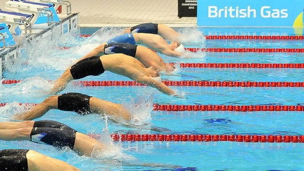
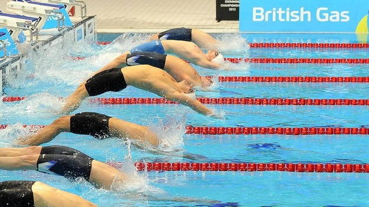

For 4 or so years I played soccer on a team. I played as a goalie and forward right (its been a while so i dont remember the positions well).
I now do swimming, I have been swimming since 6th grade or earlier and both of my brothers swim. I have been on three teams and I have a rating of them below.
Another sport that I play is volleyball. I enjoy volleyball a lot. My brother also plays volleyball and plays middle hitter. Since volleyball season has not started yet
I hope to play middle hitter or outside hitter. I played for 2 seasons at my middle school, and I took a volleyball camp at Hoffman over the summer

 
